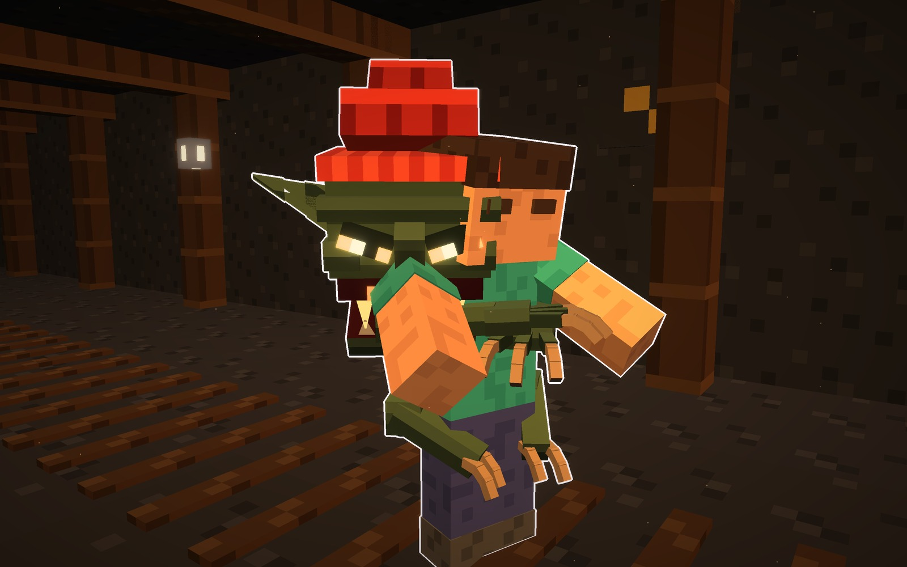
Atalaya · mob que hace algo · 15-10-2026
El Trasgo
El mob que se te aferra al cuerpo. Es el duende de las leyendas de Asturias y Cantabria, pero
nuestro: flaco y encorvado, de cabeza grande, con el gorro rojo, las orejas largas en punta, la nariz
ganchuda, los ojos rasgados que brillan y una sonrisa llena de dientes. Sus brazos larguísimos tienen garras.
Te salta encima y no te suelta.
Después del Izador («se ve raro y su cara no me gustó; la mecánica es buena»), este es un bicho
creíble, con una cara que se lee de lejos. De tu lista, es el que se te aferra al cuerpo. Lleva un guiño a la
leyenda: el agujero en la palma de la mano izquierda.
Qué hace el Trasgo
- Acecha en las minas y las cuevas, agazapado, con los ojos brillando en la oscuridad.
- Te salta encima desde unos bloques de distancia.
- Se te aferra. Mientras lo llevas encima, ves su cara asomando al lado de la tuya, y lo que te hace depende
del tipo.
Cómo quitártelo:
- golpearlo rápido;
- que un compañero le pegue;
- tirarte al agua (lo odia);
- la luz fuerte de una antorcha en la mano lo espanta antes de que salte.
Los tres son el mismo mob, en la misma pose de acecho. Cambian la piel, lo que lleva y dónde se agarra.
Agazapado mide 1,5 bloques, y 2 con la garra en alto.
A · el Colgón · a la espalda
El Colgón: se te cuelga de la espalda
- Gris verdoso, con la cola larga de gancho y una cresta de púas en la nuca.
- Lo que hace: se te cuelga de la espalda abrazado al cuello, con la cabeza asomando sobre tu hombro.
- Pesa: no puedes correr ni saltar.
- Te muerde el cuello poco a poco.
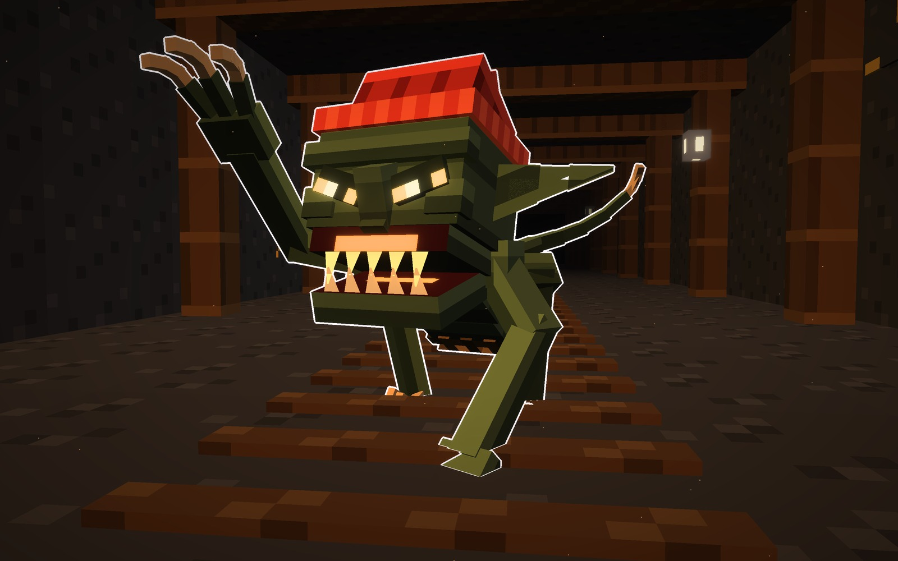
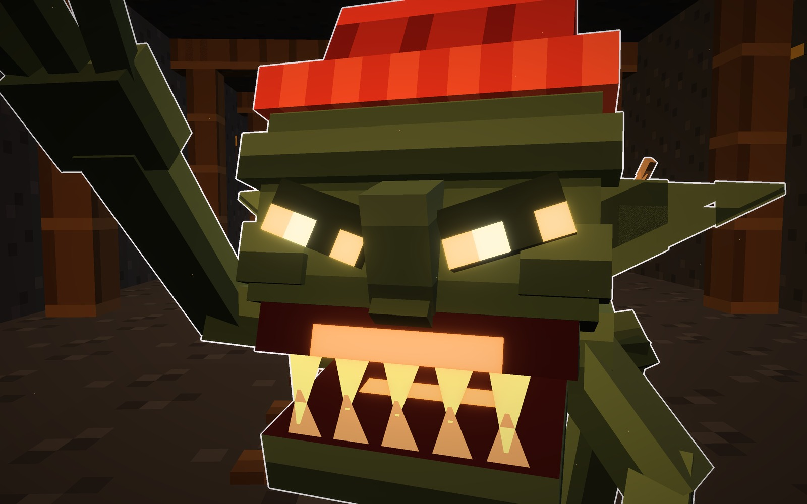
Su forma
- Piel
- gris verdosa
- Lleva
- cola de gancho y púas
- Ojos
- ámbar
Señas
- Se agarra a la espalda.
- Te quita correr y saltar.
B · el Jinete · a los hombros
El Jinete: te tapa los ojos y te lleva
- Pálido, de cueva, con dos cuernecillos y los dedos muy largos.
- Lo que hace: se te sube a los hombros y te tapa los ojos con las manos: la pantalla se queda a
oscuras, entre sus dedos. Mientras, te lleva caminando hacia lo peor que haya cerca: la lava, un barranco o
una cueva.
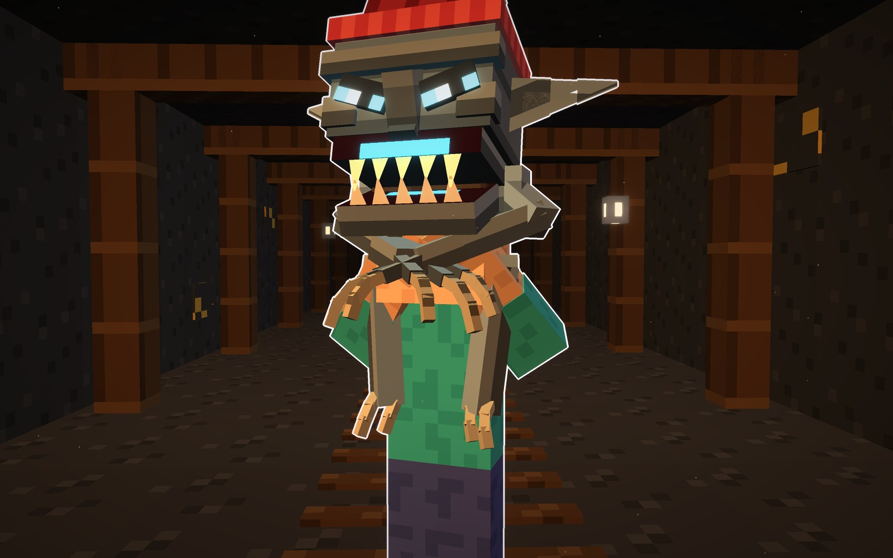
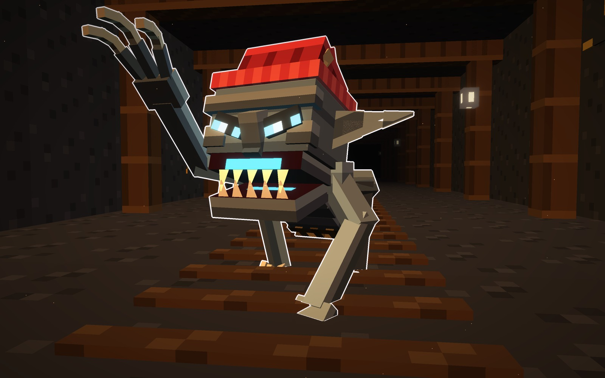
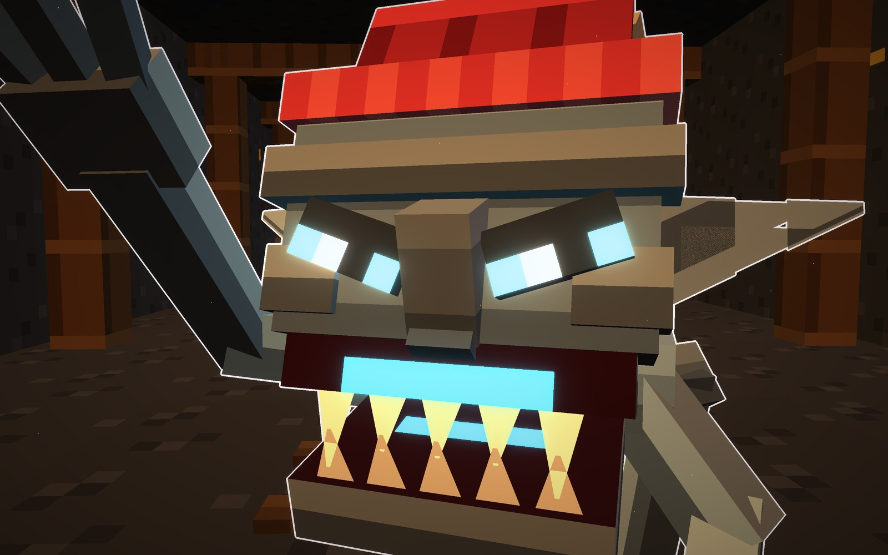
Su forma
- Piel
- gris pálida
- Lleva
- cuernecillos y dedos largos
- Ojos
- azul hielo
Señas
- Se agarra a los hombros.
- Te ciega y te guía al peligro.
C · el Ladrón · al brazo
El Ladrón: te roba lo que llevas en la mano
- Rojizo, con las orejas enormes, el gorro negro y el saco del botín a la espalda, con el oro
asomando.
- Lo que hace: se te cuelga del brazo, te muerde la mano y te arranca lo que llevas: la espada, el
pico o la comida. Luego huye corriendo a su madriguera. Si lo atrapas, lo recuperas, y lo que lleva en el saco
también.
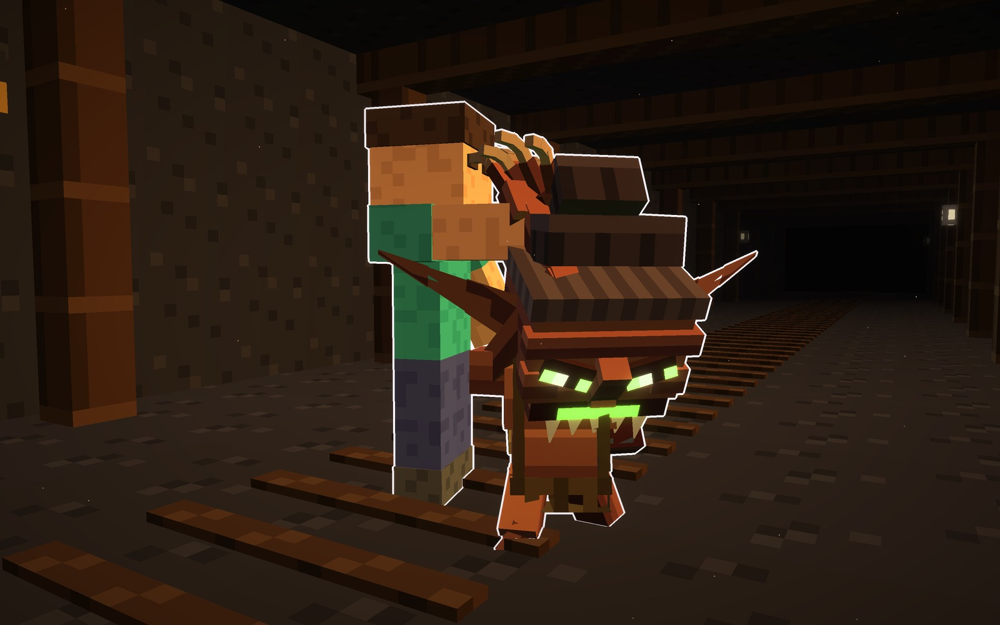
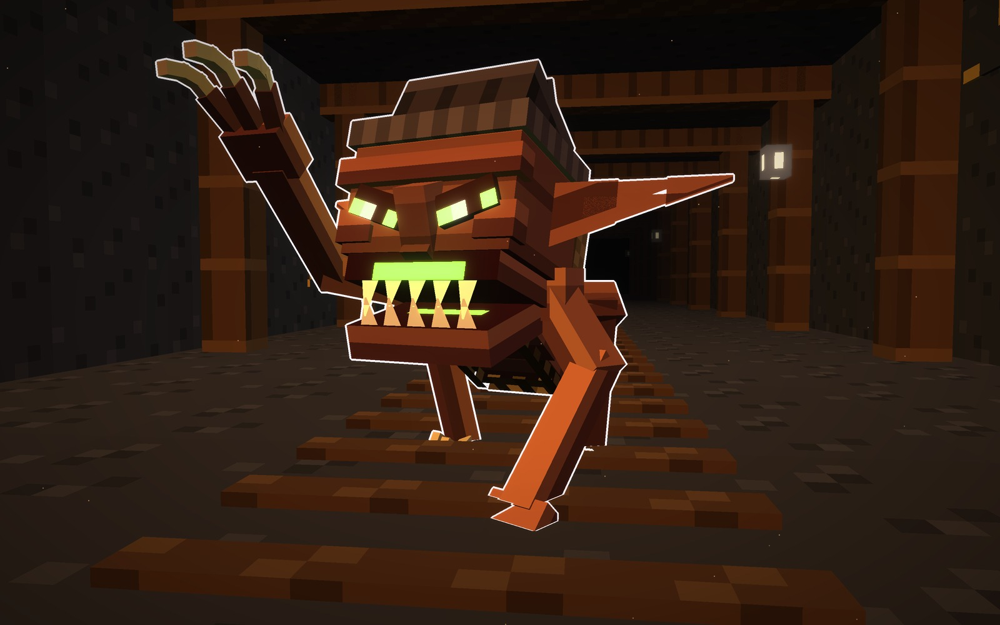
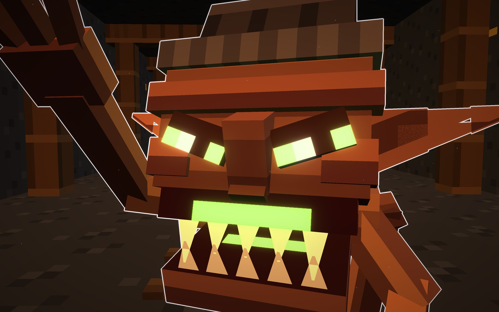
Su forma
- Piel
- rojiza
- Lleva
- orejas enormes y el saco
- Ojos
- verde
Señas
- Se agarra al brazo.
- Te roba y huye.
Los tres, con un jugador
Agazapados en la galería, junto a un jugador (1,8 bloques): el Colgón, el Jinete y el Ladrón.
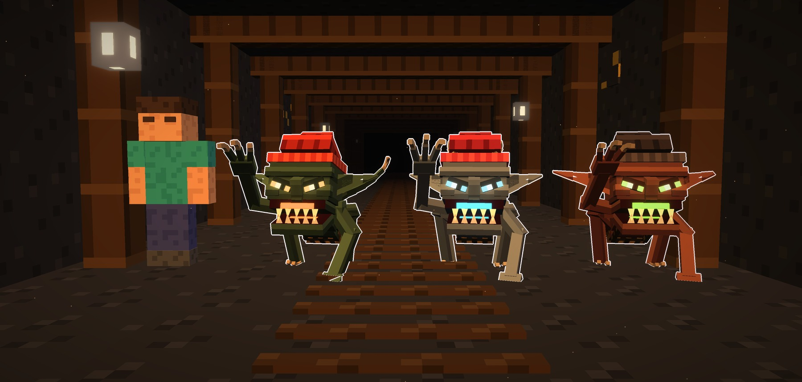
Los materiales
Una fila por tipo: la piel, el ojo, la boca, el diente, el gorro y la oreja.
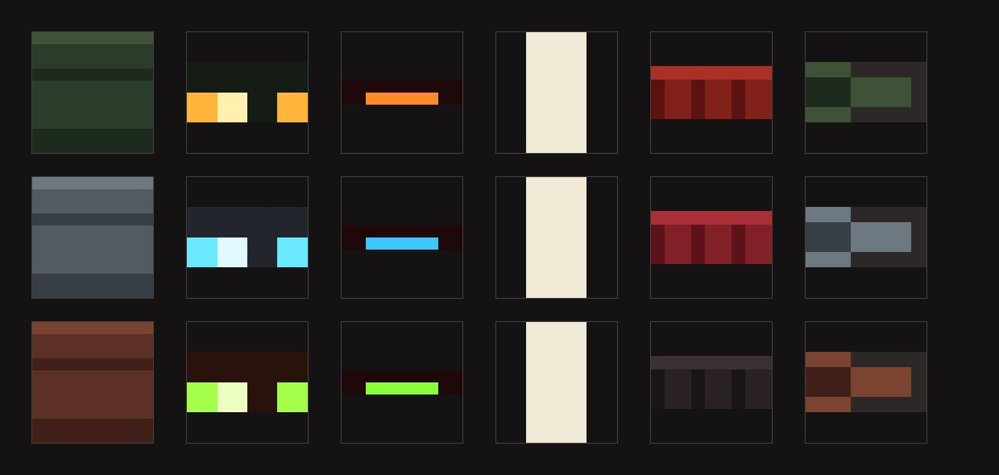
Veredicto de Juan
15-10-2026. Juan lo aprobó a la primera, con sus tres tipos: «guárdalos en mobs, sube todo y haz otro mob».
Bocetos: materiales/generadores/trasgo_modelo.py y trasgo_escenas.py, hechos desde cero.